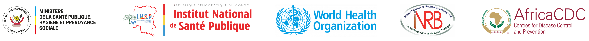

Épidémie de Maladie d’Ebola due au virus BundibugyoLe rapport de situation a déménagé
Le Rapport de situation quotidien a été déplacé vers une nouvelle adresse URL, plus sûre et plus rapide.
Veuillez contacter un partenaire concerné pour obtenir le nouveau mot de passe d’accès.
Accéder au nouveau rapport Nouvelle adresse : https://collaboratory.who.int/bvd-sitrep/